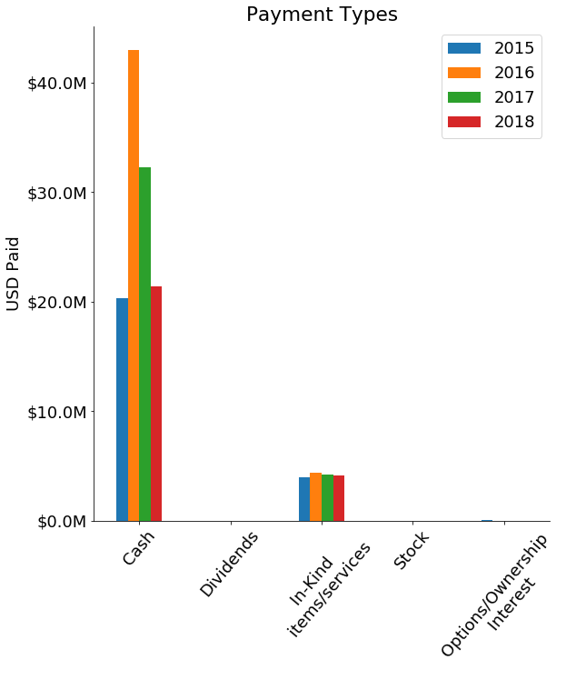

Results
Intro: TODO set up the motivation to read the following plots closely
How do total daily payments vary in Wisconsin 2015-2018?

2015, 2016, and 2017 had a four total daily payments greater than $1.5M. There was one daily payout total for $25M which dwarfs the median payout of _____ across the years. 2018 did not have the outragous payouts as the other years. In 2018 most days had total payments for less than $100K, however there appears to be some patern of +$400K payouts every other month.
Corporations are paying a lot of money on a daily basis to teaching hospital and physicans. This means that teaching hospitals and physican's are key steakholders for corporate medical companies. But where is the money actually going and for what reasons? And what is going on with enormous payment dates?
Where is the money going?

Across the four year, Physican's have recieved over 10X compared to teaching hospitals. Physicians have recieved _____ while teaching hospitals recieved only _____.
To us, this was mind-blowing. The University of Wisconsin Hospital, Children's Hospital, and Froedtert Hospital are just a few examples of teaching hospitals. These hospitals are enormous and we would have expected corperations to write bigger checks to these institutions. Of course there are far fewer teaching hospitals than physicians, but it we still would hav expected more money to be going to teaching institutions. What are physicians recieving all this money for and how are they recieving it? These are big questions that might make you question the integrity of your own physician and where there incentives are. Sadly.
TODO: Explicit Question 3
TODO: Quantitative observations about the above plot [ie: the largest categy, B, accounts for 73% of the total]
TODO: Conclusions from plot [ie: what does this mean? does it pose new questions? Are there any implecations to these findings? This is where you insert your smarticles. Make sure the conclusions are SUPPORTED by the plot. The conclusions CANNOT be too far of a stretch.
TODO: Explicit Question 3
TODO: Plot s
TODO: Quantitative observations about the above plot [ie: the largest categy, B, accounts for 73% of the total]
TODO: Conclusions from plot [ie: what does this mean? does it pose new questions? Are there any implecations to these findings? This is where you insert your smarticles. Make sure the conclusions are SUPPORTED by the plot. The conclusions CANNOT be too far of a stretch.